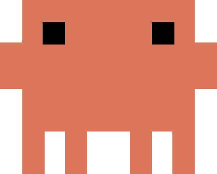

Static character study
Neutral pose · SVG rectangles · No animation

Original size above · Terracotta #DD775B
Reference: Ayotomiwa Wale-Durojaye’s recreation · Original character by Anthropic.
Neutral pose · SVG rectangles · No animation

Original size above · Terracotta #DD775B
Reference: Ayotomiwa Wale-Durojaye’s recreation · Original character by Anthropic.